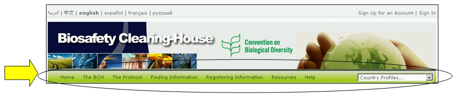

Над основной зоной начальной страницы расположена навигационная панель, которая содержит ссылки на основные разделы МПБ.

Рисунок 7
Раздел The BCH (МПБ) содержит ссылки на информацию о Механизме посредничества по биобезопасности, о его развитии и управлении, основных событиях и политике.
Раздел The Protocol (Протокол) содержит ссылки на текст Картахенского протокола, список стран, являющихся Сторонами Протокола, решения Конференций Сторон Конвенции о биологическом разнообразии, выступающих в качестве Совещаний Сторон Картахенского протокола по биобезопасности (КС-СС), а также на информацию об официальных отчетах, решениях совещаний и уведомлениях.
Раздел Finding Information (Поиск информации) содержит ссылки на систему поиска различных категорий информации в базах данных МПБ, а также информацию, составленную по различным разделам (Национальные контактные данные, реестр ЖИО, реестр родительских организмов, реестр генов и др.).
Раздел Registering Information (Ввод информации) выводит на страницу доступа к Центру управления данными, в котором зарегистрированные пользователи могут вводить новую и редактировать уже имеющуюся информацию.
Раздел Resources (Ресурсы) предоставляет доступ к дополнительным полезным информационным ресурсам Центрального портала, таким как: (а) общие форматы, используемые МПБ; (б) словарь терминов, (в) тезаурус, (г) готовые решения для участия стран в МПБ (приложения Гермес и Ajax Plug-In), (д) списки информационных рассылок, (е) список загружаемых файлов, (ж) схема портала.
Раздел Help (Помощь) обеспечивает доступ к (а) часто задаваемым вопросам, (б) учебным модулям, (в) руководству по МПБ, (г) учебному сайту МПБ и (д) помощи в осуществлении межсетевого взаимодействия.
В правой части навигационной панели расположено окно country profiles (Сведения о стране). Данная функция позволяет быстро найти всю информацию, предоставленную выбранной из перечисленных в списке стран.
В меню Центрального портала МПБ используются значки, которые иллюстрируют типы связанных с ними ссылок. Часто употребляемыми значками являются:
 ссылка на другой веб-сайт
ссылка на другой веб-сайт
 ссылка на документ в формате PDF
ссылка на документ в формате PDF
 ссылка на систему поиска другого веб-сайта
ссылка на систему поиска другого веб-сайта
Подробная информация о значках, используемых Центральным порталом МПБ, представлена в разделе Готовые рекомендации 4 на учебном сайте МПБ
(https://bchtraining.cbd.int/member/training-signin.aspx?returnurl=%2fdefault.shtml).